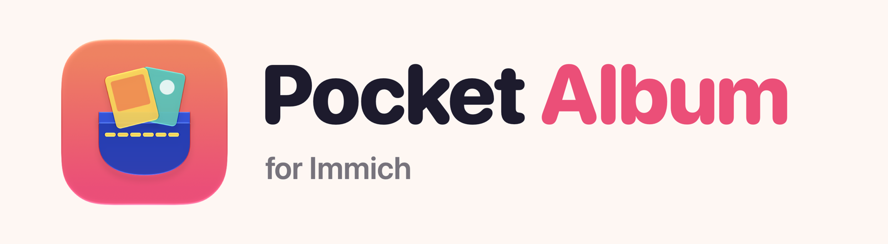
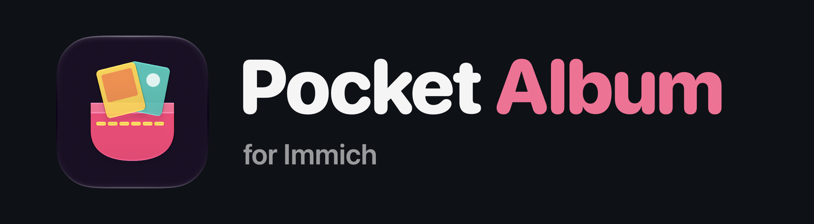
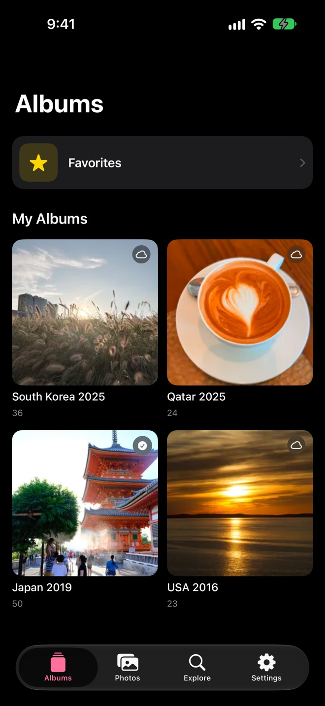
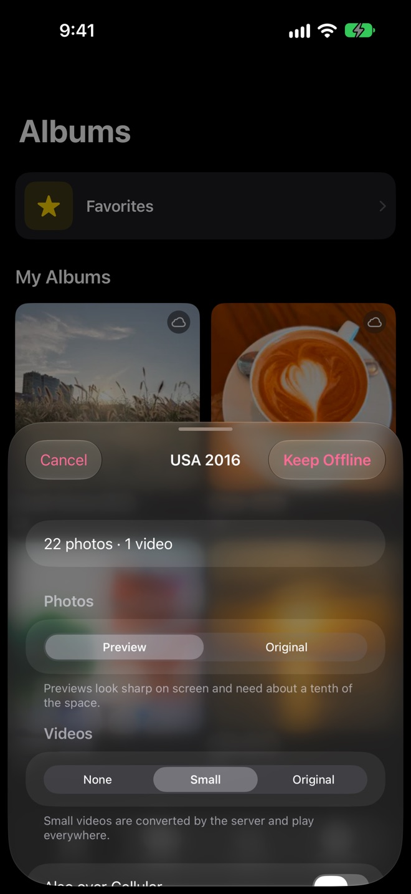
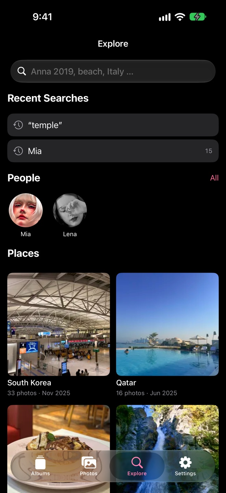
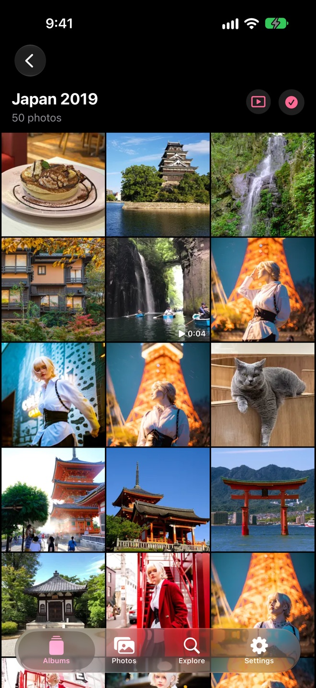

Unofficial. Not affiliated with or endorsed by the Immich project.
Your albums and photos from your own Immich server, quick to open, easy to find and still there when you're offline. Pocket Album is a small native iPhone app written in Swift and SwiftUI.




What it does
- Albums first: the app opens on your albums, with favorites right at the top
- Offline albums: keep any album on the phone as previews or originals, including videos if you like
- Explore: find photos by people, places and years, or just type what you're looking for
- Slideshow on the TV: via AirPlay, with the phone as the remote
- No upload, no backup: it only shows your photos and works fine with a read-only API key
What you need
- An iPhone with iOS 26 or later
- An Immich server, version 3.2 or later
- An API key; the README lists the permissions